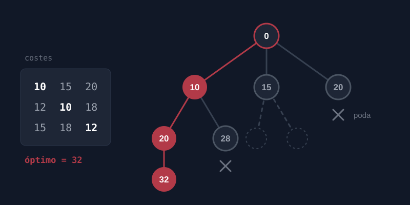

Asignación de tareas
2025
Programa en Java que reparte n tareas entre n agentes con el menor coste total, mediante ramificación y poda. Las pruebas comparan cada resultado con una búsqueda por fuerza bruta.
Java
JUnit
Maven
POO